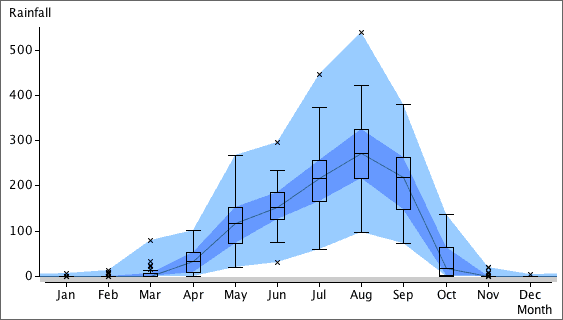

Joined-up quartiles
Box plots are an effective way to compare the distributions of different groups of values. When the groups are ordered, an alternative to the conventional display of the box plots is to join up the medians, quartiles and extremes of the groups in shaded bands.
